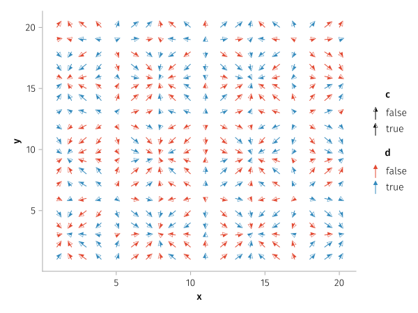
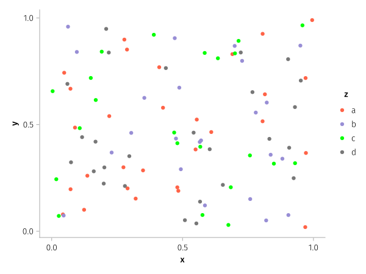
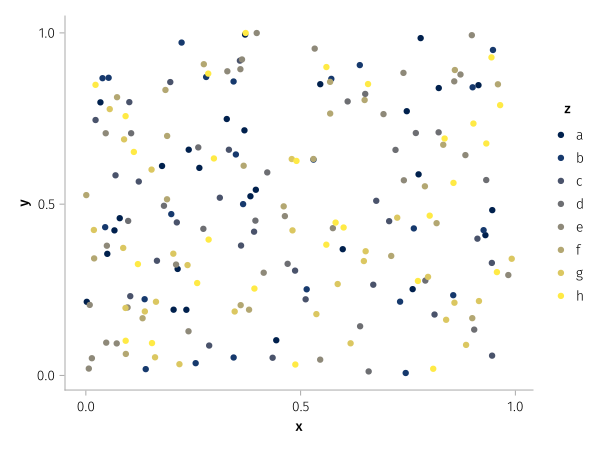

Custom scales

using AlgebraOfGraphics, CairoMakie
using ColorsA palette maps categorical values to particular attribute specifications (e.g. the first value maps to green, the second maps to red, and so on).
x=repeat(1:20, inner=20)
y=repeat(1:20, outer=20)
u=cos.(x)
v=sin.(y)
c=rand(Bool, length(x))
d=rand(Bool, length(x))
df = (; x, y, u, v, c, d)
colors = [colorant"#E24A33", colorant"#348ABD"]
heads = ['◮', '◭']
plt = data(df) *
mapping(:x, :y, :u, :v) *
mapping(arrowhead = :c => nonnumeric) *
mapping(color = :d => nonnumeric) *
visual(Arrows, arrowsize=10, lengthscale=0.4, linewidth = 1)
fg = draw(plt, scales(Marker = (; palette = heads), Color = (; palette = colors)))
To associate specific attribute values to specific data values, use pairs. Missing keys will cycle over values that are not pairs.
x = rand(100)
y = rand(100)
z = rand(["a", "b", "c", "d"], 100)
df = (; x, y, z)
plt = data(df) * mapping(:x, :y, color=:z)
colors = ["a" => :tomato, "c" => :lime, colorant"#988ED5", colorant"#777777"]
draw(plt, scales(Color = (; palette = colors)))
Categorical color gradients can also be passed to palettes. You can use the from_continuous helper function to wrap continuous colormaps which you want to sample from start to end in n steps, where n is the number of categories you are visualizing.
x = rand(200)
y = rand(200)
z = rand(["a", "b", "c", "d", "e", "f", "g", "h"], 200)
df = (; x, y, z)
plt = data(df) * mapping(:x, :y, color=:z)
draw(plt, scales(Color = (; palette = from_continuous(:cividis))))
This page was generated using DemoCards.jl and Literate.jl.